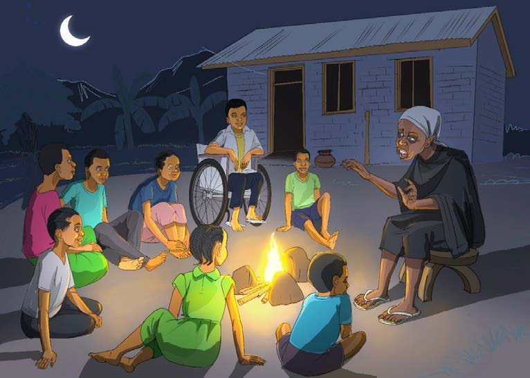

Ehee! Zimwi hilo lilikuwa na tabia ya kukamata watoto na kuwameza. Katika kijiji hicho, kulikuwa na binti mmoja aliyekuwa shupavu sana. Binti huyo aliitwa Chandachema binti Ngobongo. Wazazi wake Bwana na Bibi Ngobongo walikuwa wafugaji wa nyuki. Walikuwa na mizinga mingi huko porini. Mara kwa mara, Bwana Ngobongo alikuwa akienda kurina asali akiwa na binti yake Chandachema. Ama kwa hakika, mtoto wa nyoka ni nyoka!
Siku moja, Mzee Ngobongo alikuwa anaumwa hoi kitandani. Akamtuma Chandachema aende kurina asali porini. Mzee Ngobongo alimtahadharisha kuwa awe mwangalifu asije kukamatwa na zimwi. Chandachema alijibu, “Nitakuwa makini na mwangalifu. Pia, nitachukua kombeo kama silaha ya kujilinda dhidi ya Zimwi.”
Chandachema alianza safari ya kuelekea porini akiwa amejizatiti. Njiani, alikutana na marafiki zake Siwema, Semeni, Sikudhani na Chiku. Marafiki zake walimwomba wamsindikize. Chandachema aliwakubalia lakini akawaambia waende kwanza nyumbani kuwaaga wazazi wao. Aliwaambia kuwa, “Uchungu wa mwana aujuaye mzazi.” Walikwenda kisha wakarudi na kumkuta Chandachema akiwasubiri. “Wajukuu zangu, hadithi! Hadithi!”
